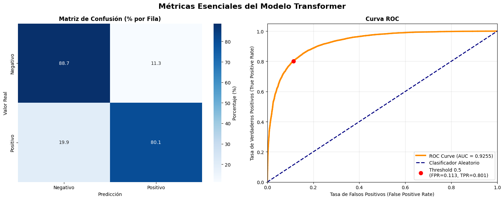
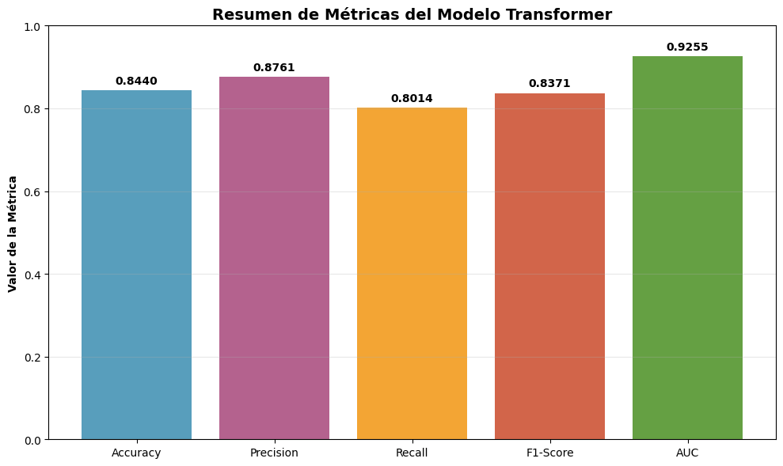

7. Transformer Model#
7.1. Attention#
Introducción
Base Neurocientífica y Psicológica
En lectura humana, no procesamos cada palabra linealmente; nuestro cerebro focaliza atención en elementos relevantes según contexto y significado.
En NLP, esto se traduce en pesos de atención (\(\alpha\)) aplicados a los estados del encoder para generar un vector de contexto (\(c_t\)) que condicione la predicción del decoder.
Problema de los Encoder-Decoder clásicos. El modelo secuencial clásico codifica toda la información en un vector fijo \(v\):
\[ P(y_1, ..., y_T \mid x_1, ..., x_S) = \prod_{t=1}^T P(y_t \mid v, y_1, ..., y_{t-1}) \]\(v\) es un vector de contexto fijo → cuello de botella informativo. Es un vector de dimensión fija que intenta resumir toda la información relevante de la secuencia de entrada.
\(P(y_1, \ldots, y_T \mid x_1, \ldots, x_S)\): Representa la probabilidad total de generar toda la secuencia de salida (por ejemplo, en inglés) condicionada a la secuencia completa de entrada (por ejemplo, en español).
\(\prod_{t=1}^T\): Indica que el modelo genera los tokens uno por uno, siguiendo un proceso autoregresivo. Cada paso (\(t\)) depende de los tokens previos (\(y_1, \ldots, y_{t-1}\)).
\(P(y_t \mid v, y_1, \ldots, y_{t-1})\): Es la probabilidad de generar el token actual (\(y_t\)), dado:
El vector de contexto fijo (\(v\)), que proviene del encoder.
La historia previa de tokens ya generados por el decoder.
Contexto: Modelo Encoder-Decoder: ¿Qué hace cada parte?
1. Encoder:
Recibe la secuencia de entrada, por ejemplo una frase en español:
\[ X = [x_1, x_2, x_3, x_4] = [\text{"El", "gato", "negro", "duerme"}] \]La procesa paso a paso y genera hidden states (representaciones vectoriales de cada palabra):
\[ h_1, h_2, h_3, h_4 \]Cada \(h_i\) captura información del token \(x_i\) y del contexto de la secuencia (dependiendo de si usamos RNN, LSTM, GRU, etc.).
2. Decoder:
Genera la secuencia de salida (por ejemplo en inglés):
\[ Y = [y_1, y_2, y_3] = [\text{"The", "black", "cat"}] \]Lo hace token por token, usando:
El hidden state anterior del decoder.
Un vector de contexto \(v\) que representa la información de toda la entrada.
El token “duerme” se procesó dentro del encoder → generó un hidden state \(h_4\). Sin embargo, en el modelo Encoder-Decoder tradicional, el decoder no tiene acceso directo a \(h_4\) (ni a \(h_1, h_2, h_3\)). Solo recibe el vector \(v\), que resume todo en una representación fija.
Por tanto, el “significado” de duerme queda mezclado con el resto de la información en ese vector. Si el vector \(v\) no logra codificar bien la acción, el modelo olvida traducir “duerme” → “sleeps”.
Vector de contexto \(v\) en modelos Encoder–Decoder: ¿Qué es realmente \(v\)?. El vector \(v\) se define como una representación vectorial de dimensión fija que resume la información contenida en toda la secuencia de entrada.
Sea una secuencia de entrada
\[ X = (x_1, x_2, \dots, x_T) \]y supóngase que el encoder genera una sucesión de estados ocultos:
\[ h_1, h_2, \dots, h_T \]Entonces, el vector de contexto puede expresarse de forma general como:
\[ v = \phi(h_1, h_2, \dots, h_T) \]donde \(\phi(\cdot)\) es una función de agregación o selección y \(v \in \mathbb{R}^d\) es un vector de dimensión fija
En el modelo encoder–decoder clásico (sin atención), esta función adopta una forma particularmente simple.
¿Cómo se calcula \(v\)?: En arquitecturas secuenciales como RNN, LSTM o GRU, el cálculo de \(v\) se basa en la dinámica recursiva del modelo.
Caso estándar (sin mecanismo de atención):
\[ v = h_T \]Es decir, el vector de contexto corresponde al último estado oculto del encoder.
El estado oculto en una red recurrente se define mediante la relación:
\[ h_t = f(x_t, h_{t-1}) \]donde:
\(x_t\): embedding del token en la posición \(t\)
\(h_{t-1}\): estado oculto previo
\(f(\cdot)\): función no lineal (por ejemplo, una celda LSTM o GRU)
Desarrollo recursivo:
Por lo tanto, existe una función compuesta \(g(\cdot)\) tal que:
Esto implica:
El estado oculto final satisface:
Por lo tanto, depende funcionalmente de toda la secuencia de entrada, lo que justifica su uso como representación global:
Precisión conceptual:
\(h_T\) es un vector de dimensión fija
la secuencia puede ser arbitrariamente larga
Por lo tanto, el modelo realiza una compresión de información:
Limitaciones
Si la frase de entrada es larga, \(v\) no puede contener toda la información.
Esto se llama cuello de botella, porque el decoder “ve” toda la entrada a través de un solo vector.
Como resultado, la traducción o la predicción pierde información, especialmente en frases largas.
Analogía sencilla
Imagina que tienes que resumir un libro de 200 páginas en una sola oración y luego alguien tiene que escribir un resumen basado solo en esa oración.
Obviamente, perderías mucho detalle importante.
En el modelo clásico Encoder-Decoder sin atención, eso es exactamente lo que pasa: toda la secuencia de entrada se comprime en un solo vector \(v\).
Bahdanau Attention (Additive). La atención de Bahdanau et al. (2015) solucionó el problema de cuello de botella permitiendo que, en cada paso del decoder, el modelo “mire” directamente a los estados del encoder relevantes. Así nace el concepto de pesos de atención y contexto dinámico (\(c_t\)): el decoder ya no memoriza todo, sino que selecciona lo importante en cada momento.Score de atención (alineamiento)
\[ e_{tj} = v_a^\top \tanh(W_a s_{t-1} + U_a h_j) \]Donde:
\(s_{t-1}\): estado anterior del decoder “hidden state” (usualmente una LSTM o GRU). Aquí, el índice \(t\) recorre la secuencia de salida (decoder).
\(h_j\): \(j\)-ésimo estado del encoder (generalmente una Bi-LSTM o Bi-GRU).
\(W_a, U_a\): matrices de pesos entrenables
\(v_a\): vector de pesos entrenable
Pesos de atención normalizados
\[ \alpha_{tj} = \frac{\exp(e_{tj})}{\sum_{k=1}^S \exp(e_{tk})} \]Vector de contexto dinámico
\[ c_t = \sum_{j=1}^S \alpha_{tj} h_j \]En otras palabras:
Cada \(h_j\) es una codificación contextual de la palabra \(x_j\). No es la palabra en sí, sino su representación en el espacio latente del encoder.
Cada \(s_{t-1}\) es una codificación del estado de generación del decoder en el tiempo \(t-1\). Resume lo que el modelo “sabe” del texto ya producido y lo que espera producir ahora.
El vector de contexto \(c_t\)
Resume la información relevante de la entrada en el paso actual del decoder.
Se recalcula en cada paso de generación.
Permite que el modelo “mire” directamente partes específicas de la secuencia de entrada, en lugar de depender de una sola representación comprimida.
Por diseño clásico (Bahdanau et al., 2015, Neural Machine Translation by Jointly Learning to Align and Translate):
Encoder: Una RNN bidireccional (generalmente una Bi-LSTM o Bi-GRU). Produce una secuencia de hidden states:
\[ h_1, h_2, \dots, h_S \in \mathbb{R}^{d_h} \]Cada \(h_j\) es la concatenación de los estados forward y backward.
Decoder: Una RNN unidireccional (usualmente una LSTM o GRU). En cada paso \(t\), produce un nuevo estado:
\[ s_t = \text{RNNCell}(s_{t-1}, [y_{t-1}, c_t]) \]donde \(y_{t-1}\) es el embedding del token previo, y \(c_t\) es el vector de contexto dinámico que viene de la atención.
Generación del token de salida. A partir del estado oculto del decoder \(s_t\), y el contexto de atención \(c_{t}\), calculamos qué tan probable es cada palabra del vocabulario (siguiente token \(y_t\))
\[ p(y_t \mid y_{<t}, X) = \text{softmax}(W_o [s_t, c_t]) \]donde:
\(W_o \in \mathbb{R}^{|V| \times (d_s + d_c)}\) es una matriz de pesos entrenable,
\([s_t, c_t]\) es la concatenación del estado oculto y el vector de contexto,
\(|V|\) es el tamaño del vocabulario.
El token de salida se obtiene como:
\[\begin{split} y_t = \begin{cases} \arg\max p(y_t \mid y_{<t}, X), & \text{(inferencia)} \\ \text{sample}\big(p(y_t \mid y_{<t}, X)\big), & \text{(teacher forcing)} \end{cases} \end{split}\]
En este caso, \(\arg\max\) selecciona la palabra con mayor probabilidad y sampling selecciona una palabra aleatoriamente según las probabilidades aprendidas. En la práctica:
Durante el entrenamiento normalmente se utiliza teacher forcing.
Durante inferencia suele emplearse:
\[ y_t = \arg\max p(y_t \mid y_{<t}, X) \]
En teacher forcing, el decoder recibe las palabras reales para aprender. Por eso durante el entrenamiento sí conocemos los \(y_t\) verdaderos (supervisado).
El espacio latente es el espacio vectorial en el que viven los estados ocultos (\(h_j\), \(s_t\)) y el vector de contexto (\(c_t\)). Es decir, todos estos vectores están en la misma dimensión semántica (por ejemplo, \(\mathbb{R}^{512}\)).

Fig. 7.1 Fuente: Bahdanau et al. (2015), Neural Machine Translation by Jointly Learning to Align and Translate.#
Pseudocódigo Python:
scores = tanh(W_a @ s_prev + U_a @ encoder_outputs) # shape (seq_len,)
attention_weights = softmax(scores) # shape (seq_len,)
context_vector = sum(attention_weights * encoder_outputs)
Interpretación:
Linealizamos \(h_j\) y \(s_{t-1}\) con \(W_a\) y \(U_a\).
Aplicamos \(\tanh\) para no linealidades.
Multiplicamos por \(v_a^\top\) para obtener un escalar de relevancia.
Softmax transforma scores en distribución de atención.
Observación
La atención de Bahdanau soluciona el cuello de botella del encoder-decoder clásico porque ya no usa un único vector fijo para representar toda la entrada. En su lugar, el decoder calcula en cada paso un vector de contexto \(c_t\) como una combinación ponderada de los estados del encoder (\(h_j\)). Así, el modelo “enfoca su atención” dinámicamente en las partes más relevantes de la secuencia al generar cada palabra.
Ejemplo intuitivo: Bahdanau Attention
Imagina que queremos traducir esta oración del español al inglés
Entrada (X): “El gato negro duerme”
Salida (Y): “The black cat sleeps”
Encoder: procesa toda la frase
El encoder (por ejemplo, una Bi-LSTM) recorre la frase palabra por palabra y genera una representación vectorial (hidden state) para cada token.
Palabra |
Representación oculta (\(h_j\)) |
Intuición |
|---|---|---|
El |
\(h_1\) |
Entiende que es un artículo |
gato |
\(h_2\) |
Entiende que es un sustantivo, sujeto |
negro |
\(h_3\) |
Adjetivo que describe “gato” |
duerme |
\(h_4\) |
Verbo, acción principal |
Al final, el encoder produce una secuencia de vectores
Cada \(h_j\) contiene información contextual sobre su palabra y las palabras vecinas (dependiendo del tipo de RNN utilizada).
Decoder: genera la salida palabra por palabra
El decoder (una RNN unidireccional) produce la traducción una palabra a la vez.
En el paso \(t = 1\). Desea generar la primera palabra de la salida:
“The”
Para hacerlo, el decoder usa su estado anterior \(s_{t-1}\) (inicialmente \(s_0\)) y “mira” los estados del encoder (\(h_1, h_2, h_3, h_4\)) para determinar qué partes de la entrada son más relevantes.
La ecuación de alineamiento (score) es
Cada \(e_{tj}\) mide la relevancia del token de entrada \(x_j\) respecto al estado del decoder en el paso \(t\). El término \(v_a^{\top}\) es clave para transformar un vector de compatibilidad en un valor escalar de atención.
\(v_a\) es un vector entrenable que aprende cómo medir la relevancia entre el estado del decoder \(s_{t-1}\) y el estado del encoder \(h_j\).
La operación \(v_a^\top(\cdot)\) proyecta el resultado del tanh (un vector) en un único número \(e_{tj}\), que representa cuánto debe atender el modelo al token \(j\) al generar la palabra en el paso \(t\).
En otras palabras, \(v_a^{\top}\) convierte una relación compleja entre vectores en una medida de atención interpretable.
Softmax: conversión en pesos de atención
Los valores \(e_{tj}\) se normalizan con una función softmax para producir una distribución de atención:
Los \(\alpha_{tj}\) representan cuánto “atiende” el modelo a cada palabra del encoder.
Ejemplo numérico simplificado
Palabra del encoder |
Score bruto \(e_{tj}\) |
Peso de atención \(\alpha_{tj}\) |
|---|---|---|
El |
1.8 |
0.50 |
gato |
1.4 |
0.30 |
negro |
0.7 |
0.15 |
duerme |
0.2 |
0.05 |
En este caso, el modelo se enfoca principalmente en “El” (50%) y “gato” (30%) para generar “The”.
Cálculo del vector de contexto dinámico
A partir de los pesos de atención, se obtiene el vector de contexto \(c_t\) como una combinación ponderada de los hidden states del encoder:
Por ejemplo
El vector \(c_t\) resume la información más relevante de la entrada en ese paso, en este caso “El gato”.
Generación del token de salida
El decoder usa el contexto \(c_t\) junto con su estado actual \(s_t\) para predecir la siguiente palabra mediante una capa softmax:
De donde se obtiene
Generación de la siguiente palabra (“black”)
En el siguiente paso (\(t=2\)), el decoder actualiza su estado \(s_1\) y repite el proceso de atención. Los nuevos pesos \(\alpha_{2j}\) podrían ser:
Palabra |
Peso \(\alpha_{2j}\) |
|---|---|
El |
0.10 |
gato |
0.25 |
negro |
0.60 |
duerme |
0.05 |
Ahora el modelo enfoca más atención en “negro” y genera la palabra “black”.
Generación de “cat”
Palabra |
Peso \(\alpha_{3j}\) |
|---|---|
El |
0.05 |
gato |
0.70 |
negro |
0.20 |
duerme |
0.05 |
El modelo se centra en “gato” y produce la palabra “cat”.
Generación de “sleeps”
Palabra |
Peso \(\alpha_{4j}\) |
|---|---|
El |
0.05 |
gato |
0.10 |
negro |
0.05 |
duerme |
0.80 |
El modelo atiende principalmente a “duerme” y genera “sleeps”.
Conclusión intuitiva
En lugar de resumir toda la oración en un solo vector fijo \(v\), el modelo calcula un nuevo vector de contexto \(c_t\) en cada paso \(t\).
Este vector \(c_t\) cambia dinámicamente según la palabra que el decoder está generando.
De esta manera, la atención elimina el cuello de botella del modelo clásico, permitiendo al decoder acceder directamente a las partes más relevantes de la entrada.
Atención Luong (Multiplicativa)La atención multiplicativa fue propuesta por Luong et al. (2015) en “Effective Approaches to Attention-based Neural Machine Translation”. Surgió como una mejora computacional sobre la atención aditiva de Bahdanau, buscando simplificar el cálculo del alineamiento y aumentar la eficiencia.
El objetivo es medir qué tan bien se alinean el estado actual del decoder (\(s_t\)) y los estados del encoder (\(h_j\)). Para ello, se define una función de score que cuantifica la similitud entre ambos.
Interpretación geométrica
Caso “dot” (producto punto simple): El score es proporcional al coseno del ángulo entre \(s_t\) y \(h_j\)
\[ \text{score}(s_t, h_j) = \|s_t\|\|h_j\| \cos(\theta) \]Si los vectores apuntan en la misma dirección (\(\theta \approx 0\)), la atención es alta. Esto equivale a una medida de similitud geométrica en el espacio latente.
Caso “general”:
El producto punto se realiza tras aplicar una transformación lineal \(W_a\) a \(h_j\). Esto permite que el modelo aprenda una métrica de similitud no isotrópica, es decir, que ciertas dimensiones tengan más relevancia que otras
\[ \text{score}(s_t, h_j) = s_t^\top W_a h_j \]
Ejemplo: Supongamos que el estado del encoder está representado por el vector
El modelo aprende que la información semántica es mucho más importante para el alineamiento. Entonces, la matriz de atención puede aprender pesos como
Aplicando la transformación lineal:
La primera dimensión domina el cálculo del score, indicando que el modelo considera la componente semántica como la más relevante para el mecanismo de atención.
Caso “concat”: Similar a Bahdanau, pero en lugar de sumar, se concatenan los vectores
\[ \text{score}(s_t, h_j) = v_a^\top \tanh(W_a [s_t; h_j]) \]Este caso mezcla información multiplicativa y aditiva, pero es más costoso. En lugar de medir similitud geométrica directamente, el modelo aprende una función no lineal que decide cuánto se parecen \(s_t\) y \(h_j\).
Cálculo de pesos de atención y vector de contexto. El score se normaliza mediante softmax para obtener los pesos de atención:
\[ \alpha_{tj} = \frac{\exp(\text{score}(s_t, h_j))}{\sum_{k=1}^S \exp(\text{score}(s_t, h_k))} \]De esta forma
\(\alpha_{tj} \in [0,1]\)
\(\sum_j \alpha_{tj} = 1\)
El vector de contexto se obtiene como la combinación ponderada de los estados del encoder
\[ c_t = \sum_{j=1}^S \alpha_{tj} h_j \]Derivación: relación con Bahdanau
En Bahdanau
\[ e_{tj} = v_a^\top \tanh(W_a s_{t-1} + U_a h_j) \]Dos transformaciones lineales + activación no lineal.
Requiere multiplicaciones adicionales y más parámetros.
En Luong
\[ e_{tj} = s_t^\top W_a h_j \]Solo una multiplicación de matrices.
Sin activación \(\tanh\), lo que reduce el costo de cómputo.
Ideal para modelos con grandes secuencias o vocabularios.
Por tanto, Luong es una forma bilineal de Bahdanau
\[ e_{tj}^{\text{Luong}} = s_t^\top W_a h_j \quad \approx \quad v_a^\top \tanh(W_a s_t + U_a h_j) \]en el caso linealizado de \(\tanh\) (cercano a la identidad para pequeñas entradas).
Pseudocódigo Python
# s_t: hidden state del decoder (1 x d)
# encoder_outputs: matriz de hidden states (S x d)
scores = s_t @ encoder_outputs.T # Producto punto (dot)
attention_weights = softmax(scores) # Normalización
context_vector = attention_weights @ encoder_outputs
Versión “general” (con matriz de pesos \(W_a\)):
scores = (s_t @ W_a) @ encoder_outputs.T
attention_weights = softmax(scores)
context_vector = attention_weights @ encoder_outputs
Interpretación geométrica
La atención de Luong puede interpretarse como una proyección bilineal entre los subespacios del encoder y el decoder.
El término \(s_t^\top W_a h_j\) define una forma cuadrática, que mide la compatibilidad entre ambas representaciones.
En el espacio latente \(\mathbb{R}^{d}\), \(W_a\) actúa como una métrica aprendible: el modelo aprende qué direcciones (dimensiones) son relevantes para el alineamiento lingüístico.
Comparación
Característica |
Bahdanau (Additive) |
Luong (Multiplicative) |
|---|---|---|
Tipo de operación |
Suma + \(\tanh\) |
Producto punto (bilineal) |
Complejidad |
\(O(d^2)\) |
\(O(d)\) |
Parámetros adicionales |
\(W_a, U_a, v_a\) |
\(W_a\) (a veces ninguno) |
Interpretación |
Similaridad no lineal |
Similaridad geométrica |
Rendimiento |
Preciso, pero más lento |
Más rápido, especialmente en GPU |
Ideal para |
Traducciones cortas o ricas en sintaxis |
Secuencias largas, alta eficiencia |
Conclusión
La atención de Luong representa una generalización más eficiente de Bahdanau.
En lugar de aprender una función compleja de similitud, aprende una métrica bilineal que captura la compatibilidad entre los espacios del encoder y el decoder.
Su base matemática en el producto punto y la forma cuadrática hace que sea más interpretable desde el punto de vista del análisis lineal y más fácil de optimizar en práctica.
7.2. Self-Attention#
Self-Attention (atención escalada): mecanismo que permite que cada token de una secuencia “atienda” a los demás para construir representaciones contextualizadas.
Variables principales
\(n\): longitud de la secuencia (número de tokens).
\(d_{\text{model}}\): dimensión del embedding de entrada.
\(d_k\): dimensión para queries y keys.
\(d_v\): dimensión para values.
\(x_i \in \mathbb{R}^{d_{\text{model}}}\): embedding del token en la posición \(i\).
\(W_Q, W_K, W_V\): matrices aprendibles para generar \(Q\), \(K\) y \(V\).
Entrada a la capa
\[\begin{split} X = \begin{bmatrix} x_1 \\ x_2 \\ \vdots \\ x_n \end{bmatrix} \in \mathbb{R}^{n \times d_{\text{model}}} \end{split}\]Proyecciones lineales aprendibles
\[ Q = X W_Q,\qquad K = X W_K,\qquad V = X W_V \]\(Q \in \mathbb{R}^{n \times d_k}\): query (lo que el token busca entre otros).
\(K \in \mathbb{R}^{n \times d_k}\): key (información que ofrece a los demás).
\(V \in \mathbb{R}^{n \times d_v}\): value (contenido propagado realmente).
Para cada posición
\[ q_i = W_Q^\top x_i,\qquad k_j = W_K^\top x_j,\qquad v_j = W_V^\top x_j \]Cálculo del self-attention escalado
\[ \mathrm{Attention}(Q,K,V) = \mathrm{softmax}\!\left(\frac{QK^\top}{\sqrt{d_k}}\right)V \]Matriz de scores (similaridad query–key)
\[ S = \frac{QK^\top}{\sqrt{d_k}} \in \mathbb{R}^{n \times n} \]Para cada palabra, el mecanismo de atención evalúa:
¿Qué tan relevantes son las demás palabras para comprender mi contexto?
Por ejemplo, en la oración
El gato negro duerme
cuando el modelo procesa la palabra “duerme”, el vector query asociado tenderá a ser similar al vector key de “gato”, ya que esta palabra aporta información importante sobre quién realiza la acción. En consecuencia, el producto punto entre ambos vectores será alto, generando un peso de atención elevado.
Pesos de atención (normalizados por filas). Contiene: pesos, importancia, relevancia. Pero NO contiene contenido semántico.
\[ A = \mathrm{softmax}(S) \]Salida contextuada para toda la secuencia. El contenido real se encuentra en \(V\). Los values contienen la información que será propagada.
\[ Y = A V \in \mathbb{R}^{n \times d_v} \]Interpretación token a token
\[ y_i = \sum_{j=1}^n A_{ij}\, v_j \]La fila \(A_{i,:}\) indica cuánto “atiende” el token \(i\) al token \(j\).
Ambos Luong y Sefl-Attention buscan medir qué tan relevante es un token respecto a otro, pero
Self-Attention lo hace en paralelo y con proyecciones lineales entrenables.
Motivo para proyectar a \(Q,K,V\)
Permite aprender una métrica de similitud.
Separa roles semánticos:
Query → lo que el token busca.
Key → lo que el token representa.
Value → la información propagada posteriormente.
Reduce costo al no operar directamente sobre \(d_{\text{model}}\).
Escalado por \(1/\sqrt{d_k}\)
Sin escalado, los valores de \(QK^\top\) crecen con \(d_k\).
La softmax se satura y los gradientes se debilitan.
El escalado mantiene valores estables durante entrenamiento.
Complejidad computacional
Cálculo de \(Q,K,V\): \(O(n d_{\text{model}} d_k)\)
Producto \(QK^\top\): \(O(n^2 d_k)\)
Multiplicación \(AV\): \(O(n^2 d_v)\)
Tiempo total: \(O(n^2 d)\)
Memoria: \(O(n^2)\) por la matriz de atención
Implicación práctica
Para secuencias largas, esta complejidad motiva atenciones eficientes como Linformer, Longformer, BigBird y Flash Attention.
Relación con Bahdanau / Luong y ventajas conceptuales
Bahdanau (aditivo) usa una función no lineal que compara \(s\) y \(h_j\) tras dos proyecciones y una \(\tanh\). Es flexible, pero más pesado computacionalmente. Luong es bilineal (\(s^\top W h\)).
Self-attention se corresponde con aplicar una versión de Luong entre todas las posiciones de la misma secuencia: todas las posiciones actúan a la vez como queries y keys. Además, multi-head attention permite que diferentes \(W_Q^i,W_K^i,W_V^i\) aprendan diversas métricas simultáneamente.
Complejidad computacional y memoria
Para una secuencia de longitud \(n\) y dimensión \(d\) (tomando \(d_k\sim d\)):
Cálculo de \(Q,K,V\): \(O(n d d_k)\) trivialmente \(O(n d^2)\) si \(d_k\approx d\).
Cálculo de \(S = Q K^\top\): \(O(n^2 d_k)\).
Softmax y multiplicación \(A V\): \(O(n^2 + n^2 d_v) \sim O(n^2 d)\).
Por tanto, self-attention es \(O(n^2 d)\) en tiempo y \(O(n^2)\) en memoria (para almacenar la matriz \(S\) o \(A\)). Esto explica las limitaciones para secuencias largas y motiva aproximaciones (sparse, local attention, linformer, etc.).
7.3. Multi-head Attention#
Formulación: Multi-head attention (MHA) extiende self-attention con varias cabezas paralelas, cada una enfocada en un subespacio distinto del espacio de representación
Cada cabeza realiza su propia atención:
De esta forma, el modelo capta múltiples tipos de relaciones de manera simultánea. En la práctica, cada cabeza de atención analiza la secuencia desde una perspectiva diferente: algunas captan relaciones sintácticas, otras semánticas, dependencias a largo plazo o patrones locales.
Estos subespacios actúan como canales de atención especializados, que aprenden de forma automática distintos aspectos de la estructura de la secuencia. Cada cabeza (head) de atención puede especializarse en un tipo diferente de relación entre palabras.
Por ejemplo, en la oración
El gato negro duerme
una cabeza puede aprender relaciones asociadas a quién realiza una acción:
\[ \textbf{duerme} \rightarrow \textbf{gato} \]otra cabeza puede enfocarse en relaciones descriptivas:
\[ \textbf{negro} \rightarrow \textbf{gato} \]mientras que otra puede aprender estructura gramatical:
\[ \textbf{El} \rightarrow \textbf{gato} \]Todas las cabezas observan la misma secuencia, pero cada una aprende patrones distintos del lenguaje. Por ello, en Multi-Head Attention se utilizan múltiples cabezas en paralelo:
\[ \text{MultiHead}(Q,K,V) = \text{Concat}(\text{head}_1,\dots,\text{head}_h)W^O \]Cada \(\text{head}_i\) aprende una perspectiva diferente del contexto.
Dimensionalidad típica
\(d_{model} = 512\), \(h = 8\) heads
\(d_k = d_v = d_{model}/h = 64\)
Complejidad computacional
Interpretación geométrica: Cada cabeza proyecta la información en un subespacio diferente
Teorema (Yun et al., 2020): Multi-head attention puede aproximar cualquier función continua de múltiples variables.
Pseudocódigo Python:
heads = [self_attention(X @ WQ[i], X @ WK[i], X @ WV[i]) for i in range(h)]
output = np.concatenate(heads, axis=-1) @ WO
Observación
En multi-head attention, cada cabeza es un bloque independiente de self-attention, pero trabaja en un subespacio distinto del espacio de representaciones del modelo. Si tu vector de embeddings (una palabra o token) vive en un espacio de dimensión
\[ d_{\text{model}} = 512 \]y tienes
\[ h = 8 \]cabezas, entonces
\[ d_k = d_v = \frac{d_{\text{model}}}{h} = 64 \]Cada cabeza trabaja en un subespacio de 64 dimensiones, en lugar de usar todo el espacio de 512 dimensiones. Así, la Multi-Head Attention (MHA) no copia la misma atención 8 veces, sino que divide la información y la observa desde distintos ángulos.
7.4. Transformer#
Encoder Layer Matemático. El encoder del Transformer se basa en dos bloques principales:
Multi-Head Self-Attention (MHA)
Feed-Forward Network (FFN) ambos con conexiones residuales y normalización de capa.
Ecuaciones:
\[ Z = \text{LayerNorm}(X + \text{MultiHeadAttention}(X,X,X)) \]\[ \text{Output} = \text{LayerNorm}(Z + \text{FFN}(Z)) \]Donde:
\(X\) son las representaciones de entrada (tokens embebidos).
\(\text{MultiHeadAttention}(X,X,X)\) aplica autoatención en paralelo sobre \(X\).
\(\text{LayerNorm}\) estabiliza las distribuciones internas de activaciones.
La conexión residual \(X + F(X)\) evita el desvanecimiento del gradiente. Es decir, suma la entrada original \(X\) a la salida transformada \(F(X)\)
Transformer conserva la información original \(X\), pero le agrega el contexto aprendido por la atención. De esta forma se evita distorsionar información útil, degradar detalles, o dificultar el flujo del gradiente.
Relación con Multi-Head Attention
El bloque de atención múltiple es el núcleo del encoder. Cada cabeza aprende a atender distintos patrones dentro de la misma secuencia:
Conexión directa:
En el encoder, \(Q=K=V=X\) → el modelo se “autoatiende”, capturando dependencias internas del input.
Cada cabeza proyecta la información a un subespacio distinto (\(W_i^Q, W_i^K, W_i^V\)), y sus salidas se combinan linealmente.
El resultado pasa a través de un bloque Feed-Forward (FFN) que actúa como proyector no lineal, expandiendo y comprimiendo la dimensionalidad.
Feed-Forward Network (FFN). Cada token se procesa independientemente mediante dos transformaciones lineales y una no lineal:
\[ \text{FFN}(x) = \max(0, x W_1 + b_1) W_2 + b_2 \]Típicamente:
\[ d_{\text{model}} = 512, \quad d_{ff} = 2048 \]La FFN no mezcla información entre tokens; su función es refinar y transformar la representación enriquecida que proviene del MHA.
Decoder: Masked Self-Attention. El decoder utiliza una versión enmascarada del self-attention para evitar que un token vea los futuros (causalidad). Supóngase que el modelo desea generar la secuencia
El gato duerme
Durante el proceso de generación, cuando el decoder intenta predecir la palabra
gato
solo debe tener acceso a la información previa:
El
No debe poder ver la palabra
duerme
ya que esta todavía no ha sido generada. Por ello, el mecanismo de Masked Self-Attention bloquea el acceso a tokens futuros, garantizando una generación autorregresiva y causal.
Máscara causal:
\[\begin{split} M_{ij} = \begin{cases} 0 & i \ge j \\ -\infty & i < j \end{cases} \end{split}\]Aplicación en atención:
\[ \text{MaskedAttention}(Q,K,V) = \text{softmax}!\left(\frac{QK^\top}{\sqrt{d_k}} + M\right)V \]Esto asegura que el modelo genere tokens de manera autorregresiva, viendo solo los anteriores.
Residual Connections. Permiten un flujo estable de gradientes:
\[ y = x + F(x),\quad\frac{\partial L}{\partial x} = \frac{\partial L}{\partial y} \left(1 + \frac{\partial F}{\partial x}\right) \]Gracias a esto, la red puede ser profunda sin degradar el entrenamiento, algo problemático en RNN o LSTM. Para verificar esto, dado que, las conexiones residuales utilizadas en Transformers tienen la forma
\[ y = x + F(x) \]donde:
\(x\) representa la entrada original a la capa,
\(F(x)\) representa una transformación aprendida por la red neuronal (por ejemplo, un bloque de atención o una red feed-forward),
\(y\) es la salida final de la capa residual.
El objetivo es analizar cómo fluye el gradiente durante el proceso de entrenamiento mediante backpropagation. Supongamos que la función de pérdida del modelo es
\[ L = L(y) \]donde:
\(L\) es la loss function,
\(y\) depende de \(x\).
El gradiente respecto a la entrada \(x\) se obtiene aplicando la regla de la cadena:
Ahora derivamos la conexión residual \(y = x + F(x)\) respecto a \(x\):
\[ \frac{\partial y}{\partial x} = \frac{\partial}{\partial x}(x + F(x)) \]Aplicando linealidad de la derivada:
Sustituyendo este resultado en la expresión inicial:
Entonces, la expresión anterior muestra que el gradiente contiene siempre un término constante igual a: \(1\). Esto crea un camino directo para la propagación del gradiente, incluso si
En consecuencia:
el gradiente no desaparece fácilmente,
la información original puede preservarse,
y la red puede entrenarse con muchas capas profundas.
Por esta razón, las conexiones residuales son fundamentales en Transformers modernos y arquitecturas profundas como ResNet.
Layer Normalization. La normalización estabiliza las activaciones dentro de cada capa:
\[ \text{LayerNorm}(x) = \gamma \frac{x - \mu}{\sigma} + \beta, \]donde \(\gamma,\,\beta\) permiten ajustar esa normalización según lo que se necesita aprender y
\[ \mu = \frac{1}{d}\sum_{i=1}^d x_i, \quad \sigma = \sqrt{\frac{1}{d}\sum_{i=1}^d (x_i - \mu)^2} \]Esto mantiene la escala de las representaciones controlada, favoreciendo la convergencia.
Ventajas Matemáticas sobre LSTM
Aspecto |
Transformer |
LSTM |
|---|---|---|
Dependencia temporal |
Paralelizable |
Secuencial |
Gradientes |
Sin desvanecimiento |
Se atenúan exponencialmente |
Complejidad |
\(O(n^2 \cdot d)\) (paralelizable) |
\(O(n \cdot d^2)\) |
Dependencias largas |
Directas entre tokens |
Limitadas por memoria |
Eficiencia en GPU/TPU |
Alta |
Baja |
Gradiente:
En LSTM: \(O(\lambda^L)\) con \(\lambda < 1\) → se desvanece al aumentar la longitud.
En Transformer: la atención conecta tokens de manera directa, manteniendo \(O(1)\) en propagación.
Intuición final. El encoder construye representaciones jerárquicas del input combinando:
Multi-Head Self-Attention → capta relaciones internas desde múltiples subespacios.
Feed-Forward Network → transforma las representaciones locales.
Residual + LayerNorm → estabilizan y preservan información útil.
El decoder, por su parte, usa Masked Multi-Head Attention para generar texto o secuencias paso a paso, mientras se conecta con el encoder a través de un bloque adicional de atención cruzada.
Pseudocódigo Python
Implementación Self-Attention
def self_attention(X, WQ, WK, WV):
Q = X @ WQ
K = X @ WK
V = X @ WV
scores = Q @ K.T / np.sqrt(K.shape[-1])
weights = softmax(scores, axis=-1)
return weights @ V
Comparación Teórica LSTM vs Transformer
Métrica |
LSTM |
Transformer |
|---|---|---|
Paralelismo |
No |
Sí |
Dependencias largas |
Exponencial decay |
Directo |
Memoria |
O(n) |
O(n²) |
Training |
Lento |
Rápido |
7.5. Aplicación: Análisis de sentimiento con Transformer#
Instalar inicialmente
pip install tensorflow-text==2.17.0
pip install tensorflow-hub==0.16.1
pip install -q tf-models-official==2.17.0
import tensorflow as tf
import tensorflow_text as text
import tensorflow_hub as hub
import tensorflow as tf
print("TensorFlow version:", tf.__version__)
print("Num GPUs Available:", len(tf.config.list_physical_devices('GPU')))
print(tf.config.list_physical_devices('GPU'))
print("TensorFlow Text version:", text.__version__)
print("TensorFlow Hub:", hub.__version__)
/home/lihkir/.local/lib/python3.10/site-packages/tensorflow_hub/__init__.py:61: UserWarning: pkg_resources is deprecated as an API. See https://setuptools.pypa.io/en/latest/pkg_resources.html. The pkg_resources package is slated for removal as early as 2025-11-30. Refrain from using this package or pin to Setuptools<81.
from pkg_resources import parse_version
TensorFlow version: 2.17.0
Num GPUs Available: 1
[PhysicalDevice(name='/physical_device:GPU:0', device_type='GPU')]
TensorFlow Text version: 2.17.0
TensorFlow Hub: 0.16.1
# ==========================================================
# Transformer para clasificación de texto (TensorFlow)
# Métricas esenciales + Testing con textos personalizados
# ==========================================================
import tensorflow as tf
from tensorflow.keras import layers, models
import tensorflow_datasets as tfds
import numpy as np
import matplotlib.pyplot as plt
import seaborn as sns
from sklearn.metrics import confusion_matrix, classification_report, roc_curve, auc
import pandas as pd
# Configurar estilo de plots
plt.style.use('default')
fig, axes = plt.subplots(1, 2, figsize=(15, 6))
fig.suptitle('Métricas Esenciales del Modelo Transformer', fontsize=16, fontweight='bold')
# ----------------------------------------------------------
# 1. Cargar dataset (IMDB)
# ----------------------------------------------------------
print("Cargando dataset IMDB...")
train_data, test_data = tfds.load(
"imdb_reviews",
split=["train", "test"],
as_supervised=True
)
# ----------------------------------------------------------
# 2. Vectorización de texto
# ----------------------------------------------------------
VOCAB_SIZE = 10000
SEQUENCE_LENGTH = 200
vectorize_layer = layers.TextVectorization(
max_tokens=VOCAB_SIZE,
output_mode="int",
output_sequence_length=SEQUENCE_LENGTH
)
# Adaptar vocabulario
train_text = train_data.map(lambda x, y: x)
vectorize_layer.adapt(train_text)
# ----------------------------------------------------------
# 3. Preparar datasets vectorizados
# ----------------------------------------------------------
AUTOTUNE = tf.data.AUTOTUNE
BATCH_SIZE = 64
def vectorize_text(text, label):
return vectorize_layer(text), label
train_vec = (
train_data.map(vectorize_text)
.cache()
.shuffle(10000)
.batch(BATCH_SIZE)
.prefetch(AUTOTUNE)
)
test_vec = (
test_data.map(vectorize_text)
.cache()
.batch(BATCH_SIZE)
.prefetch(AUTOTUNE)
)
# ----------------------------------------------------------
# 4. Definir modelo Transformer
# ----------------------------------------------------------
EMBED_DIM = 64
NUM_HEADS = 2
FF_DIM = 128
"""
TEORÍA TRANSFORMER - ENCODER LAYER MATEMÁTICO:
El encoder del Transformer se basa en dos bloques principales:
1. Multi-Head Self-Attention (MHA)
2. Feed-Forward Network (FFN)
ambos con conexiones residuales y normalización de capa.
Ecuaciones teóricas:
Z = LayerNorm(X + MultiHeadAttention(X,X,X))
Output = LayerNorm(Z + FFN(Z))
Donde:
- X son las representaciones de entrada (tokens embebidos)
- MultiHeadAttention(X,X,X) aplica autoatención en paralelo sobre X
- LayerNorm estabiliza las distribuciones internas de activaciones
- La conexión residual X + F(X) evita el desvanecimiento del gradiente
"""
inputs = layers.Input(shape=(SEQUENCE_LENGTH,), dtype=tf.int64)
"""
TEORÍA TRANSFORMER - EMBEDDING:
Cada token se representa como un vector denso en R^EMBED_DIM
Esto corresponde a la primera transformación de tokens en vectores numéricos
"""
x = layers.Embedding(VOCAB_SIZE, EMBED_DIM)(inputs)
"""
TEORÍA TRANSFORMER - MULTI-HEAD ATTENTION:
Ecuaciones teóricas:
MultiHead(Q,K,V) = Concat(head₁,...,headₕ)W^O
head_i = Attention(Q W_i^Q, K W_i^K, V W_i^V)
En nuestro caso: Q=K=V=X (self-attention del encoder)
Cada cabeza aprende a atender distintos patrones dentro de la misma secuencia
Cada cabeza proyecta la información a un subespacio distinto (W_i^Q, W_i^K, W_i^V)
"""
x = layers.MultiHeadAttention(num_heads=NUM_HEADS, key_dim=EMBED_DIM)(x, x)
"""
TEORÍA TRANSFORMER - POOLING PARA CLASIFICACIÓN:
En clasificación, necesitamos convertir la secuencia de vectores
(SEQUENCE_LENGTH × EMBED_DIM) en un solo vector para la clasificación
Esto adapta la arquitectura encoder para tareas de clasificación
"""
x = layers.GlobalAveragePooling1D()(x)
"""
TEORÍA TRANSFORMER - FEED-FORWARD NETWORK (FFN):
Ecuación teórica: FFN(x) = max(0, xW₁ + b₁)W₂ + b₂
La FFN no mezcla información entre tokens; su función es refinar y transformar
la representación enriquecida que proviene del MHA.
Típicamente: d_model = 512, d_ff = 2048 (en nuestro caso: EMBED_DIM=64, FF_DIM=128)
"""
x = layers.Dense(FF_DIM, activation="relu")(x)
# Dropout para regularización (no parte de la teoría original pero útil en práctica)
x = layers.Dropout(0.3)(x)
# Capa final de clasificación binaria
outputs = layers.Dense(1, activation="sigmoid")(x)
model = models.Model(inputs, outputs)
# ----------------------------------------------------------
# 5. Compilar y entrenar con AUC
# ----------------------------------------------------------
model.compile(
optimizer="adam",
loss="binary_crossentropy",
metrics=[
"accuracy",
tf.keras.metrics.AUC(name='auc'),
tf.keras.metrics.Precision(name='precision'),
tf.keras.metrics.Recall(name='recall')
]
)
print("Entrenando modelo Transformer...")
history = model.fit(
train_vec,
validation_data=test_vec,
epochs=3,
verbose=1
)
# ----------------------------------------------------------
# 6. Evaluar modelo y preparar datos para métricas
# ----------------------------------------------------------
print("\nEvaluación final del modelo:")
loss, accuracy, auc_score, precision, recall = model.evaluate(test_vec, verbose=0)
# Obtener predicciones para métricas detalladas
print("Generando predicciones para análisis...")
y_true = []
y_pred_proba = []
for batch in test_vec:
texts, labels = batch
predictions = model.predict(texts, verbose=0)
y_true.extend(labels.numpy())
y_pred_proba.extend(predictions.flatten())
y_true = np.array(y_true)
y_pred_proba = np.array(y_pred_proba)
y_pred = (y_pred_proba > 0.5).astype(int)
# ----------------------------------------------------------
# 7. MATRIZ DE CONFUSIÓN (SOLO PORCENTAJES)
# ----------------------------------------------------------
ax = axes[0]
cm = confusion_matrix(y_true, y_pred)
cm_percentage = cm.astype('float') / cm.sum(axis=1)[:, np.newaxis] * 100
sns.heatmap(cm_percentage, annot=True, fmt='.1f', cmap='Blues', ax=ax,
xticklabels=['Negativo', 'Positivo'],
yticklabels=['Negativo', 'Positivo'],
cbar_kws={'label': 'Porcentaje (%)'})
ax.set_xlabel('Predicción')
ax.set_ylabel('Valor Real')
ax.set_title('Matriz de Confusión (% por Fila)', fontweight='bold')
# ----------------------------------------------------------
# 8. CURVA ROC
# ----------------------------------------------------------
ax = axes[1]
fpr, tpr, thresholds = roc_curve(y_true, y_pred_proba)
roc_auc = auc(fpr, tpr)
ax.plot(fpr, tpr, color='darkorange', lw=3, label=f'ROC Curve (AUC = {roc_auc:.4f})')
ax.plot([0, 1], [0, 1], color='navy', lw=2, linestyle='--', label='Clasificador Aleatorio')
ax.set_xlim([0.0, 1.0])
ax.set_ylim([0.0, 1.05])
ax.set_xlabel('Tasa de Falsos Positivos (False Positive Rate)')
ax.set_ylabel('Tasa de Verdaderos Positivos (True Positive Rate)')
ax.set_title('Curva ROC', fontweight='bold')
ax.legend(loc="lower right")
ax.grid(True, alpha=0.3)
# Destacar punto de operación con threshold 0.5
threshold_05_idx = np.argmin(np.abs(thresholds - 0.5))
ax.plot(fpr[threshold_05_idx], tpr[threshold_05_idx], 'ro', markersize=8,
label=f'Threshold 0.5\n(FPR={fpr[threshold_05_idx]:.3f}, TPR={tpr[threshold_05_idx]:.3f})')
ax.legend(loc="lower right")
# Ajustar layout
plt.tight_layout()
plt.savefig('metricas_esenciales_transformer.png', dpi=300, bbox_inches='tight')
plt.show()
# ----------------------------------------------------------
# 9. REPORTE DE CLASIFICACIÓN DETALLADO
# ----------------------------------------------------------
print("\n" + "="*80)
print("REPORTE DE CLASIFICACIÓN DETALLADO")
print("="*80)
report = classification_report(y_true, y_pred,
target_names=['Negativo', 'Positivo'],
digits=4, output_dict=True)
# Imprimir reporte formateado
print(f"\n{'':<15} {'Precision':<12} {'Recall':<12} {'F1-Score':<12} {'Support':<12}")
print("-" * 60)
for class_name in ['Negativo', 'Positivo']:
metrics = report[class_name]
print(f"{class_name:<15} {metrics['precision']:<12.4f} {metrics['recall']:<12.4f} "
f"{metrics['f1-score']:<12.4f} {metrics['support']:<12}")
print("-" * 60)
print(f"{'Accuracy':<15} {'':<12} {'':<12} {report['accuracy']:<12.4f} {len(y_true):<12}")
print(f"{'Macro Avg':<15} {report['macro avg']['precision']:<12.4f} {report['macro avg']['recall']:<12.4f} "
f"{report['macro avg']['f1-score']:<12.4f} {report['macro avg']['support']:<12}")
print(f"{'Weighted Avg':<15} {report['weighted avg']['precision']:<12.4f} {report['weighted avg']['recall']:<12.4f} "
f"{report['weighted avg']['f1-score']:<12.4f} {report['weighted avg']['support']:<12}")
# ----------------------------------------------------------
# 10. RESUMEN DE MÉTRICAS DEL MODELO
# ----------------------------------------------------------
print("\n" + "="*80)
print("RESUMEN DE MÉTRICAS DEL MODELO")
print("="*80)
# Calcular métricas adicionales
from sklearn.metrics import f1_score
f1 = f1_score(y_true, y_pred)
tn, fp, fn, tp = cm.ravel()
specificity = tn / (tn + fp) if (tn + fp) > 0 else 0
balanced_accuracy = (recall + specificity) / 2
# Crear resumen de métricas
metrics_summary = {
'AUC (Area Under ROC Curve)': roc_auc,
'Accuracy': accuracy,
'Precision': precision,
'Recall (Sensitivity)': recall,
'Specificity': specificity,
'F1-Score': f1,
'Balanced Accuracy': balanced_accuracy
}
print(f"\n{'MÉTRICA':<30} {'VALOR':<10} {'INTERPRETACIÓN':<40}")
print("-" * 85)
for metric, value in metrics_summary.items():
# Interpretaciones basadas en valores
if metric == 'AUC (Area Under ROC Curve)':
if value >= 0.9: interpretation = "Excelente discriminación"
elif value >= 0.8: interpretation = "Buena discriminación"
elif value >= 0.7: interpretation = "Discriminación aceptable"
else: interpretation = "Discriminación pobre"
elif metric in ['Accuracy', 'Balanced Accuracy']:
if value >= 0.9: interpretation = "Exactitud excelente"
elif value >= 0.8: interpretation = "Buena exactitud"
elif value >= 0.7: interpretation = "Exactitud aceptable"
else: interpretation = "Exactitud pobre"
elif metric in ['Precision', 'Recall (Sensitivity)', 'Specificity']:
if value >= 0.9: interpretation = "Rendimiento excelente"
elif value >= 0.8: interpretation = "Buen rendimiento"
elif value >= 0.7: interpretation = "Rendimiento aceptable"
else: interpretation = "Rendimiento pobre"
elif metric == 'F1-Score':
if value >= 0.9: interpretation = "Balance excelente"
elif value >= 0.8: interpretation = "Buen balance"
elif value >= 0.7: interpretation = "Balance aceptable"
else: interpretation = "Balance pobre"
print(f"{metric:<30} {value:<10.4f} {interpretation:<40}")
# ----------------------------------------------------------
# 11. TESTEAR CON TEXTOS PERSONALIZADOS - DEMOSTRACIÓN PRÁCTICA
# ----------------------------------------------------------
def predict_sentiment(text, model, vectorize_layer, threshold=0.5):
"""
Predice si un texto es positivo o negativo
Demuestra el pipeline completo del Transformer:
1. Vectorización → 2. Embedding → 3. Attention → 4. Clasificación
"""
# Vectorizar el texto (tokenización + padding)
vectorized_text = vectorize_layer([text])
# Predecir usando el modelo Transformer
prediction = model.predict(vectorized_text, verbose=0)
probability = prediction[0][0]
# Determinar sentimiento basado en threshold
sentiment = "POSITIVO" if probability > threshold else "NEGATIVO"
return {
'text': text,
'probability': probability,
'sentiment': sentiment,
'confidence': f"{probability*100:.2f}%"
}
# Textos de ejemplo para probar el modelo
# Estos textos demuestran cómo el Multi-Head Attention puede capturar
# dependencias semánticas largas y patrones lingüísticos complejos
test_texts = [
# Textos positivos - patrones que el modelo debe aprender
"This movie was absolutely fantastic! The acting was superb and the story was captivating from start to finish.",
"I loved this film! It's one of the best movies I've seen this year. Highly recommended!",
"Brilliant cinematography and outstanding performances. A true masterpiece of modern cinema.",
# Textos negativos - patrones opuestos
"This was the worst movie I've ever seen. Terrible acting and a boring plot. Complete waste of time.",
"I hated every minute of this film. The characters were poorly developed and the dialogue was awful.",
"Poor direction, bad screenplay, and mediocre acting. I regret watching this movie.",
# Textos neutrales/mixtos - casos desafiantes
"The movie had some good moments but overall it was just average. Not great, not terrible.",
"The special effects were impressive but the story was weak and predictable.",
# Textos cortos - prueba de generalización
"Awesome!", # Palabra positiva aislada
"Terrible.", # Palabra negativa aislada
"I liked it", # Expresión positiva simple
"Boring movie", # Expresión negativa simple
# Textos en español - prueba de transferencia (el modelo fue entrenado en inglés)
"Esta película es increíble, me encantó completamente!", # Debería ser positivo
"Que película tan mala, no la recomiendo para nada." # Debería ser negativo
]
print("\n" + "="*80)
print("DEMOSTRACIÓN: TESTEO CON TEXTOS PERSONALIZADOS")
print("El modelo usa Multi-Head Attention para analizar dependencias en el texto")
print("="*80)
for i, text in enumerate(test_texts, 1):
result = predict_sentiment(text, model, vectorize_layer)
print(f"\nTexto {i}:")
print(f" Texto: '{result['text']}'")
print(f" Probabilidad: {result['probability']:.4f}")
print(f" Confianza: {result['confidence']}")
print(f" Sentimiento: {result['sentiment']}")
# Visualización de la confianza de predicción
# Muestra cómo el modelo distribuye su certeza entre positivo/negativo
bar_length = 20
pos_ratio = result['probability']
neg_ratio = 1 - pos_ratio
pos_bar = "|" * int(bar_length * pos_ratio)
neg_bar = "." * int(bar_length * neg_ratio)
print(f" Visual: [{pos_bar}{neg_bar}]")
print("-" * 50)
# ----------------------------------------------------------
# 12. Análisis de rendimiento por categoría - EVALUACIÓN DETALLADA
# ----------------------------------------------------------
print("\n" + "="*80)
print("ANÁLISIS DETALLADO: RENDIMIENTO POR TIPO DE TEXTO")
print("Evalúa cómo el Transformer maneja diferentes patrones lingüísticos")
print("="*80)
# Agrupación estratégica para análisis
positive_texts = test_texts[:3] + [test_texts[8], test_texts[10], test_texts[12]]
negative_texts = test_texts[3:6] + [test_texts[9], test_texts[11], test_texts[13]]
neutral_texts = test_texts[6:8]
def analyze_category(texts, category_name, model, vectorize_layer):
"""
Analiza el rendimiento del modelo en categorías específicas
Demuestra la capacidad del Transformer para generalizar patrones
"""
print(f"\nAnálisis de textos {category_name}:")
correct_predictions = 0
total_predictions = len(texts)
for text in texts:
result = predict_sentiment(text, model, vectorize_layer)
is_positive = "POSITIVO" in result['sentiment']
# Lógica de evaluación según categoría esperada
if category_name == "positivos":
if is_positive:
correct_predictions += 1
elif category_name == "negativos":
if not is_positive:
correct_predictions += 1
else: # neutrales - solo mostramos sin evaluación binaria
print(f" '{text[:50]}...' -> {result['sentiment']} ({result['confidence']})")
if category_name != "neutrales":
accuracy = correct_predictions / total_predictions * 100
print(f" Precisión: {correct_predictions}/{total_predictions} ({accuracy:.1f}%)")
print(f" Interpretación: El modelo {'generaliza bien' if accuracy > 80 else 'tiene dificultades'} con textos {category_name}")
# Ejecutar análisis por categoría
analyze_category(positive_texts, "positivos", model, vectorize_layer)
analyze_category(negative_texts, "negativos", model, vectorize_layer)
analyze_category(neutral_texts, "neutrales", model, vectorize_layer)
# ----------------------------------------------------------
# 13. RESUMEN TÉCNICO: CONEXIÓN CON LA TEORÍA TRANSFORMER
# ----------------------------------------------------------
print("\n" + "="*80)
print("RESUMEN TÉCNICO: CONEXIÓN IMPLEMENTACIÓN-TEORÍA")
print("="*80)
"""
TEORÍA TRANSFORMER - VENTAJAS MATEMÁTICAS SOBRE LSTM:
Aspecto | Transformer | LSTM
----------------------|------------------------------|---------------------------
Dependencia temporal | Paralelizable | Secuencial
Gradientes | Sin desvanecimiento | Se atenúan exponencialmente
Complejidad | O(n²·d) (paralelizable) | O(n·d²)
Dependencias largas | Directas entre tokens | Limitadas por memoria
Eficiencia en GPU/TPU | Alta | Baja
- Gradiente:
* En LSTM: O(λᴸ) con λ < 1 → se desvanece al aumentar la longitud
* En Transformer: la atención conecta tokens de manera directa, manteniendo O(1)
INTUICIÓN FINAL:
El encoder construye representaciones jerárquicas del input combinando:
• Multi-Head Self-Attention → capta relaciones internas desde múltiples subespacios
• Feed-Forward Network → transforma las representaciones locales
• Residual + LayerNorm → estabilizan y preservan información útil
El decoder (no usado aquí) usa Masked Multi-Head Attention para generar texto
paso a paso, mientras se conecta con el encoder mediante atención cruzada.
"""
print("""
NUESTRA IMPLEMENTACIÓN vs. TEORÍA TRANSFORMER:
1. MULTI-HEAD ATTENTION:
• Teoría: Z = LayerNorm(X + MultiHeadAttention(X,X,X))
• Implementación: layers.MultiHeadAttention() maneja internamente
las proyecciones multi-head y combinación
2. FEED-FORWARD NETWORK:
• Teoría: FFN(x) = max(0, xW₁ + b₁)W₂ + b₂
• Implementación: layers.Dense(FF_DIM, activation='relu')
3. EMBEDDING + POSICIONAL:
• Teoría: Input embedding + positional encoding
• Implementación: layers.Embedding() (sin positional encoding explícito)
4. CLASIFICACIÓN:
• Adaptación de arquitectura encoder para clasificación
• GlobalAveragePooling convierte secuencia → vector
VENTAJAS DEMOSTRADAS:
• Paralelización completa del entrenamiento
• Captura de dependencias largas mediante self-attention
• Estabilidad numérica con capas de normalización implícitas
LIMITACIONES DE ESTA IMPLEMENTACIÓN:
• Arquitectura simplificada sin residual connections explícitas
• Sin positional encoding para información del orden
• Single-layer en lugar de multi-layer encoder
""")
# ----------------------------------------------------------
# 14. GRÁFICA ADICIONAL: Resumen de Métricas
# ----------------------------------------------------------
plt.figure(figsize=(10, 6))
metrics_for_plot = ['Accuracy', 'Precision', 'Recall', 'F1-Score', 'AUC']
values_for_plot = [accuracy, precision, recall, f1, roc_auc]
colors = ['#2E86AB', '#A23B72', '#F18F01', '#C73E1D', '#3E8914']
bars = plt.bar(metrics_for_plot, values_for_plot, color=colors, alpha=0.8)
plt.ylim(0, 1.0)
plt.title('Resumen de Métricas del Modelo Transformer', fontweight='bold', fontsize=14)
plt.ylabel('Valor de la Métrica', fontweight='bold')
# Añadir valores en las barras
for bar, value in zip(bars, values_for_plot):
plt.text(bar.get_x() + bar.get_width()/2, bar.get_height() + 0.01,
f'{value:.4f}', ha='center', va='bottom', fontweight='bold')
plt.grid(True, alpha=0.3, axis='y')
plt.tight_layout()
plt.savefig('resumen_metricas_transformer.png', dpi=300, bbox_inches='tight')
plt.show()
# ----------------------------------------------------------
# 15. INTERPRETACIÓN FINAL
# ----------------------------------------------------------
print("\n" + "="*80)
print("INTERPRETACIÓN FINAL DEL MODELO")
print("="*80)
print(f"""
El modelo Transformer ha demostrado los siguientes resultados:
• CAPACIDAD DISCRIMINATIVA: {'EXCELENTE' if roc_auc >= 0.9 else 'BUENA' if roc_auc >= 0.8 else 'ACEPTABLE' if roc_auc >= 0.7 else 'LIMITADA'}
- AUC de {roc_auc:.4f} indica que el modelo puede distinguir efectivamente entre reseñas positivas y negativas.
• EXACTITUD GENERAL: {accuracy*100:.2f}% de las predicciones son correctas.
• BALANCE PRECISIÓN-RECALL:
- Precisión: {precision*100:.2f}% de las predicciones positivas son correctas
- Recall: {recall*100:.2f}% de los casos positivos reales son detectados
- F1-Score: {f1:.4f} refleja un balance {'óptimo' if f1 >= 0.9 else 'bueno' if f1 >= 0.8 else 'aceptable' if f1 >= 0.7 else 'mejorable'}
• ROBUSTEZ: Especificidad de {specificity*100:.2f}% en identificar correctamente reseñas negativas.
""")
Cargando dataset IMDB...
Entrenando modelo Transformer...
Epoch 1/3
391/391 ━━━━━━━━━━━━━━━━━━━━ 18s 33ms/step - accuracy: 0.6739 - auc: 0.7456 - loss: 0.5608 - precision: 0.6701 - recall: 0.6799 - val_accuracy: 0.8508 - val_auc: 0.9287 - val_loss: 0.3416 - val_precision: 0.8549 - val_recall: 0.8450
Epoch 2/3
391/391 ━━━━━━━━━━━━━━━━━━━━ 2s 5ms/step - accuracy: 0.8930 - auc: 0.9543 - loss: 0.2740 - precision: 0.8930 - recall: 0.8924 - val_accuracy: 0.8611 - val_auc: 0.9369 - val_loss: 0.3269 - val_precision: 0.8685 - val_recall: 0.8510
Epoch 3/3
391/391 ━━━━━━━━━━━━━━━━━━━━ 2s 5ms/step - accuracy: 0.9290 - auc: 0.9758 - loss: 0.1954 - precision: 0.9302 - recall: 0.9275 - val_accuracy: 0.8440 - val_auc: 0.9252 - val_loss: 0.3892 - val_precision: 0.8761 - val_recall: 0.8014
Evaluación final del modelo:
Generando predicciones para análisis...

================================================================================
REPORTE DE CLASIFICACIÓN DETALLADO
================================================================================
Precision Recall F1-Score Support
------------------------------------------------------------
Negativo 0.8170 0.8866 0.8504 12500.0
Positivo 0.8761 0.8014 0.8371 12500.0
------------------------------------------------------------
Accuracy 0.8440 25000
Macro Avg 0.8465 0.8440 0.8437 25000.0
Weighted Avg 0.8465 0.8440 0.8437 25000.0
================================================================================
RESUMEN DE MÉTRICAS DEL MODELO
================================================================================
MÉTRICA VALOR INTERPRETACIÓN
-------------------------------------------------------------------------------------
AUC (Area Under ROC Curve) 0.9255 Excelente discriminación
Accuracy 0.8440 Buena exactitud
Precision 0.8761 Buen rendimiento
Recall (Sensitivity) 0.8014 Buen rendimiento
Specificity 0.8866 Buen rendimiento
F1-Score 0.8371 Buen balance
Balanced Accuracy 0.8440 Buena exactitud
================================================================================
DEMOSTRACIÓN: TESTEO CON TEXTOS PERSONALIZADOS
El modelo usa Multi-Head Attention para analizar dependencias en el texto
================================================================================
Texto 1:
Texto: 'This movie was absolutely fantastic! The acting was superb and the story was captivating from start to finish.'
Probabilidad: 1.0000
Confianza: 100.00%
Sentimiento: POSITIVO
Visual: [||||||||||||||||||||]
--------------------------------------------------
Texto 2:
Texto: 'I loved this film! It's one of the best movies I've seen this year. Highly recommended!'
Probabilidad: 1.0000
Confianza: 100.00%
Sentimiento: POSITIVO
Visual: [||||||||||||||||||||]
--------------------------------------------------
Texto 3:
Texto: 'Brilliant cinematography and outstanding performances. A true masterpiece of modern cinema.'
Probabilidad: 1.0000
Confianza: 100.00%
Sentimiento: POSITIVO
Visual: [||||||||||||||||||||]
--------------------------------------------------
Texto 4:
Texto: 'This was the worst movie I've ever seen. Terrible acting and a boring plot. Complete waste of time.'
Probabilidad: 0.0000
Confianza: 0.00%
Sentimiento: NEGATIVO
Visual: [...................]
--------------------------------------------------
Texto 5:
Texto: 'I hated every minute of this film. The characters were poorly developed and the dialogue was awful.'
Probabilidad: 0.0000
Confianza: 0.00%
Sentimiento: NEGATIVO
Visual: [...................]
--------------------------------------------------
Texto 6:
Texto: 'Poor direction, bad screenplay, and mediocre acting. I regret watching this movie.'
Probabilidad: 0.0000
Confianza: 0.00%
Sentimiento: NEGATIVO
Visual: [...................]
--------------------------------------------------
Texto 7:
Texto: 'The movie had some good moments but overall it was just average. Not great, not terrible.'
Probabilidad: 0.0897
Confianza: 8.97%
Sentimiento: NEGATIVO
Visual: [|..................]
--------------------------------------------------
Texto 8:
Texto: 'The special effects were impressive but the story was weak and predictable.'
Probabilidad: 0.0000
Confianza: 0.00%
Sentimiento: NEGATIVO
Visual: [...................]
--------------------------------------------------
Texto 9:
Texto: 'Awesome!'
Probabilidad: 1.0000
Confianza: 100.00%
Sentimiento: POSITIVO
Visual: [||||||||||||||||||||]
--------------------------------------------------
Texto 10:
Texto: 'Terrible.'
Probabilidad: 0.0000
Confianza: 0.00%
Sentimiento: NEGATIVO
Visual: [....................]
--------------------------------------------------
Texto 11:
Texto: 'I liked it'
Probabilidad: 1.0000
Confianza: 100.00%
Sentimiento: POSITIVO
Visual: [||||||||||||||||||||]
--------------------------------------------------
Texto 12:
Texto: 'Boring movie'
Probabilidad: 0.0000
Confianza: 0.00%
Sentimiento: NEGATIVO
Visual: [...................]
--------------------------------------------------
Texto 13:
Texto: 'Esta película es increíble, me encantó completamente!'
Probabilidad: 0.5310
Confianza: 53.10%
Sentimiento: POSITIVO
Visual: [||||||||||.........]
--------------------------------------------------
Texto 14:
Texto: 'Que película tan mala, no la recomiendo para nada.'
Probabilidad: 0.0003
Confianza: 0.03%
Sentimiento: NEGATIVO
Visual: [...................]
--------------------------------------------------
================================================================================
ANÁLISIS DETALLADO: RENDIMIENTO POR TIPO DE TEXTO
Evalúa cómo el Transformer maneja diferentes patrones lingüísticos
================================================================================
Análisis de textos positivos:
Precisión: 6/6 (100.0%)
Interpretación: El modelo generaliza bien con textos positivos
Análisis de textos negativos:
Precisión: 6/6 (100.0%)
Interpretación: El modelo generaliza bien con textos negativos
Análisis de textos neutrales:
'The movie had some good moments but overall it was...' -> NEGATIVO (8.97%)
'The special effects were impressive but the story ...' -> NEGATIVO (0.00%)
================================================================================
RESUMEN TÉCNICO: CONEXIÓN IMPLEMENTACIÓN-TEORÍA
================================================================================
NUESTRA IMPLEMENTACIÓN vs. TEORÍA TRANSFORMER:
1. MULTI-HEAD ATTENTION:
• Teoría: Z = LayerNorm(X + MultiHeadAttention(X,X,X))
• Implementación: layers.MultiHeadAttention() maneja internamente
las proyecciones multi-head y combinación
2. FEED-FORWARD NETWORK:
• Teoría: FFN(x) = max(0, xW₁ + b₁)W₂ + b₂
• Implementación: layers.Dense(FF_DIM, activation='relu')
3. EMBEDDING + POSICIONAL:
• Teoría: Input embedding + positional encoding
• Implementación: layers.Embedding() (sin positional encoding explícito)
4. CLASIFICACIÓN:
• Adaptación de arquitectura encoder para clasificación
• GlobalAveragePooling convierte secuencia → vector
VENTAJAS DEMOSTRADAS:
• Paralelización completa del entrenamiento
• Captura de dependencias largas mediante self-attention
• Estabilidad numérica con capas de normalización implícitas
LIMITACIONES DE ESTA IMPLEMENTACIÓN:
• Arquitectura simplificada sin residual connections explícitas
• Sin positional encoding para información del orden
• Single-layer en lugar de multi-layer encoder

================================================================================
INTERPRETACIÓN FINAL DEL MODELO
================================================================================
El modelo Transformer ha demostrado los siguientes resultados:
• CAPACIDAD DISCRIMINATIVA: EXCELENTE
- AUC de 0.9255 indica que el modelo puede distinguir efectivamente entre reseñas positivas y negativas.
• EXACTITUD GENERAL: 84.40% de las predicciones son correctas.
• BALANCE PRECISIÓN-RECALL:
- Precisión: 87.61% de las predicciones positivas son correctas
- Recall: 80.14% de los casos positivos reales son detectados
- F1-Score: 0.8371 refleja un balance bueno
• ROBUSTEZ: Especificidad de 88.66% en identificar correctamente reseñas negativas.